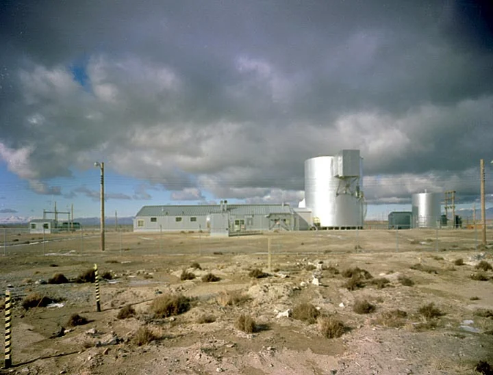
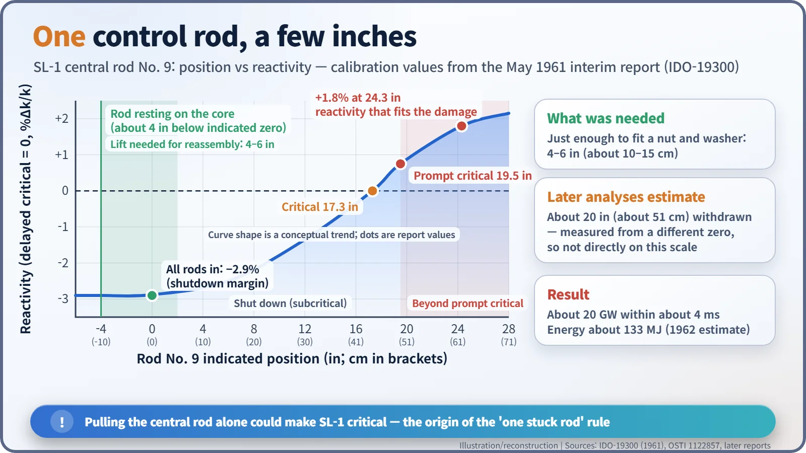
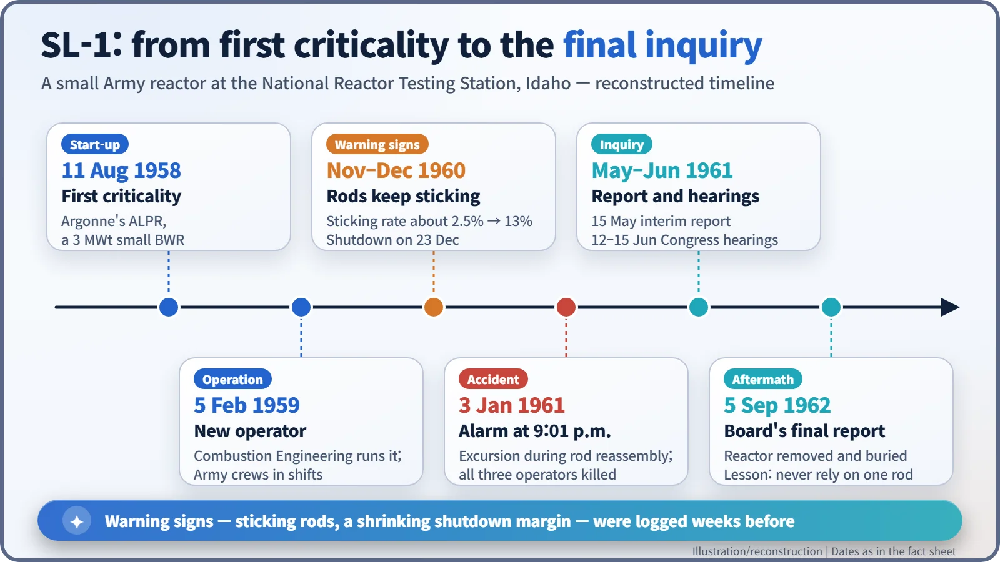

Nuclear History · 188
An Alarm in the Desert at 9:01 p.m. — SL-1, America's Only Fatal Reactor Accident (1961)
Reassembling the drive needed a lift of four to six inches; the central rod went about 20, and a single rod was enough to make the reactor critical.
On 3 January 1961 a small US Army reactor in the Idaho desert, SL-1, went prompt critical while a three-man crew was reconnecting its control rods. The central rod had been lifted far beyond the 4–6 inches the job required, and all three men died. It is often described as the only fatal reactor accident in the United States, and it made "the reactor must stay shut down even with its most effective rod stuck out" a basic design rule.
An alarm in the desert at 9:01 p.m.
At 9:01 p.m. on Tuesday, 3 January 1961, an automatic alarm came in at the Atomic Energy Commission (AEC) fire stations and security headquarters in the high desert of eastern Idaho. It came from SL-1, a small Army reactor at the National Reactor Testing Station (NRTS), today's Idaho National Laboratory. At the same moment, a radiation monitor at the gatehouse of another facility, about a mile away, went off too. To the firefighters who arrived, the building looked intact from outside. The needles on their radiation meters said otherwise: they went straight off the scale. [1]

A power plant for the Arctic
In the 1950s the US Army had a supply problem. Hauling fuel oil to radar stations in the Arctic was expensive and hard, so the Army looked at small nuclear plants that could sit at remote bases. Argonne National Laboratory designed the prototype: the Stationary Low-Power Reactor No. 1, or SL-1, first called the Argonne Low Power Reactor (ALPR). It reached criticality on 11 August 1958. [3]
It was tiny by power-plant standards. A boiling water reactor of about 3 MW of heat, it made 200 kW of electricity and 400 kW of space heating, boiling water in the core and sending the steam straight to the turbine. The core held 40 plate-type fuel assemblies with 14 kg of uranium-235, and five cross-shaped cadmium control rods. Control rods soak up neutrons: push them in and the chain reaction slows; pull them out and it speeds up. From 5 February 1959 the plant was run by the contractor Combustion Engineering, with military crews operating it in rotating shifts. [1]
Warning lights in the logbook
The operator's interim report, issued on 15 May 1961, shows that trouble had been building. Boron strips, a neutron absorber built into the fuel to burn away slowly, had bowed and some had nearly disintegrated. The shutdown margin — how far below criticality the reactor sat with all rods in — had fallen from 3.4% at the start of core life to 2.1% before cadmium strips brought it back to about 2.9%. Rods were sticking more often too: about 2.5% of scrams and drop tests in the first 22 months, about 13% between 18 November and 23 December 1960. The report also noted that the contractor's budget did not include enough staff to supervise every shift. [1]
The reactor was shut down on 23 December 1960 for the holidays. On the evening of 3 January the three-man crew had one job: reconnect the control rods to their drive mechanisms. They were Army Specialist John A. Byrnes, Navy Seabee Construction Electrician First Class Richard C. Legg, the shift supervisor, and Army Specialist Richard L. McKinley, a trainee. All three were in their twenties. [3] [4]
Four inches would have done
To reassemble each drive, a crewman lifted the rod by hand just enough to fit a nut and washer: 4 to 6 inches (about 10–15 cm). The central rod, No. 9, went much higher. Later analyses, and most accounts, put the withdrawal at about 20 inches (about 51 cm). [1] [3]
That exposed a design weakness. By the interim report's calibration, with every other rod fully inserted, pulling that single central rod past an indicated 17.3 inches was enough to make the reactor critical. A little further, at 19.5 inches, it became prompt critical: the chain reaction could grow on the neutrons released instantly by fission alone, without waiting for the slower "delayed" neutrons that normally give operators time to react. Past that line, there is no time for any human response. [1]

Four milliseconds
Power is estimated to have reached nearly 20 GW within about four milliseconds. Core water flashed to steam and drove the water above it upward like a hammer; the reactor vessel, weighing about 12 tonnes, jumped about 2.8 m (9 ft 1 in) before falling back. All three men died — two at the scene, and one shortly after being rescued, on the way to medical care. Radiation was so intense that recovering the bodies was not completed until 8 January. [1] [2] [3]
Why was it lifted so far?
No one knows for certain. The interim report said the central rod "was lifted too high for some unexplained reason." The explanation investigators considered most likely is that the rod was stuck, the crewman pulled hard, and it suddenly broke free. Other stories about personal motives have circulated for decades, but they are speculation with no support in the record. [1] [3]
Later assessments put the release to the atmosphere at about 1,100 curies (about 41 TBq) of fission products, including about 80 curies (about 3 TBq) of iodine-131. The reactor was dismantled and removed, and contaminated debris was buried about 490 m (1,600 ft) from the original site. [2] [3]
One rod, one motion
SL-1 is often described as the only fatal reactor accident in the United States. Its lesson was clear: a reactor must stay shut down even if its single most effective control rod is stuck fully out. This "one stuck rod" criterion became a basic design rule. Combustion Engineering designed a new drive that no longer required lifting a rod during reconnection, and procedures and shift supervision were tightened. [1] [3]
In the end, SL-1's safety rested on one person's hands and one motion. Nuclear safety's insistence on layered margins owes something to the three young operators who died that night.
